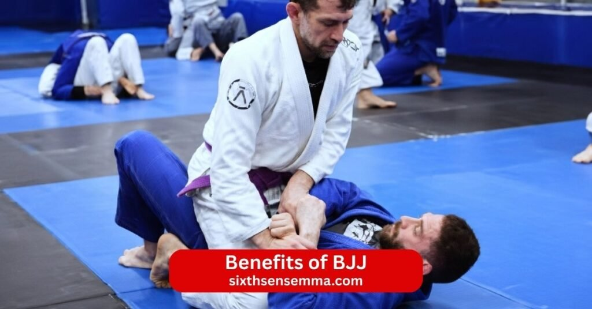
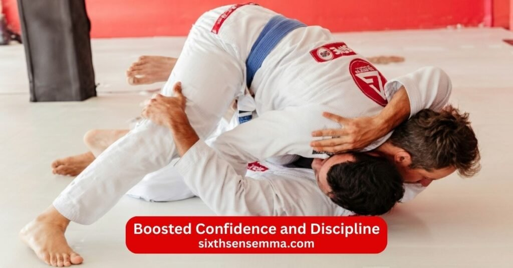

Top 10 Benefits of BJJ for Strength Fitness and Self Defense

Benefits of BJJ come from Brazilian jiu jitsu as a smart martial art that uses leverage technique and ground fighting to let practitioners control or submit even a stronger opponent. On the mat every roll involves grappling sparring drill and continuous learning which turns BJJ into a full body workout that improves physical fitness cardiovascular endurance flexibility and mobility. Practitioners of all sizes discover real self defense skills because BJJ focuses on position control submissions and escapes rather than brute strength.
1. Effective Self Defense Skills
BJJ gives effective practical self defense skills that work in real world situations. It teaches how to control an opponent on the ground escape bad positions and apply submissions safely. A practitioner learns to stay calm when taken down and use technique to overcome size or strength differences. Many smaller people discover they can handle larger attackers through leverage and smart positioning. BJJ focuses on practical ground fighting which often decides real fights. These skills build the ability to protect yourself and stay safe in dangerous situations.
2. Full Body Strength and Conditioning
BJJ provides full body strength and conditioning through constant physical exertion. Grappling uses every muscle group as you push pull twist and hold positions against resistance. Core legs back arms and grip all work hard during rolls. The workout improves overall physical health and creates functional strength that helps in daily tasks. BJJ does not rely on brute strength but builds real power through technique and endurance. Practitioners notice a stronger more athletic body after regular training.
3. Improved Cardiovascular Endurance
BJJ improves cardiovascular endurance because rolls demand sustained effort. You keep moving breathing and thinking under pressure which raises heart rate and builds cardio. Training sessions release endorphins and strengthen the heart and lungs over time. Cardiovascular health gets better as you handle longer rolls without gassing out quickly. BJJ also mixes aerobic and anaerobic work so stamina grows in a practical way. Many people find everyday activities like climbing stairs or playing with kids become easier.
4. Better Balance and Body Control
BJJ improves balance and body control through constant position changes on the mat. You learn to stay stable while standing or on the ground even when an opponent tries to off balance you. Sweeps transitions and escapes train precise movement and awareness. Practitioners develop better motor skills and the ability to control their own body under stress. This carries over to other sports and daily life where good balance prevents falls and improves coordination.
5. Increased Flexibility and Mobility
BJJ increases flexibility and mobility because it requires a wide range of motion. You stretch hips shoulders back and legs during guard work passes and submissions. The constant grappling opens tight areas and improves joint mobility. Regular training makes the body more limber and less prone to stiffness. Flexibility helps with injury prevention and makes movements smoother both on the mat and in everyday activities.
6. Weight Loss and Fat Burning
BJJ helps with weight loss and fat burning because every roll on the mat is a high effort full body workout. You constantly push pull twist and hold positions against resistance which burns a lot of calories. The physical exertion raises heart rate and keeps metabolism active even after training ends. Many practitioners see steady fat loss and better body composition when they train regularly. BJJ does not require extra cardio sessions since the grappling and sparring provide intense calorie burn naturally. Combined with a balanced diet the workout leads to visible changes in weight and shape over months.
7. Mental Focus and Problem Solving Skills
BJJ sharpens mental focus and problem solving skills because every roll feels like chess on the mat. You think ahead anticipate your opponent’s moves and adjust your strategy in real time. When a position fails you solve the puzzle by finding escapes counters or new attacks. This continuous learning process trains your brain to stay calm under pressure and think strategically. Practitioners often notice better concentration in daily tasks work or studies because BJJ teaches how to break down complex problems and find solutions step by step.

8. Boosted Confidence and Discipline
BJJ boosts confidence and discipline through small daily wins and steady progress. Each time you escape a tough hold pass a guard or submit a stronger opponent you prove to yourself what you can achieve. The journey from white belt to higher ranks requires patience and consistent effort which builds self discipline. You learn to show up even on hard days push through fatigue and keep improving. This type of confidence grows deep because it comes from real skill development and overcoming setbacks. Practitioners feel more capable in life’s hurdles both on and beyond the mats.
9. Stress Relief and Mental Well Being
BJJ offers strong stress relief and supports mental well being by giving a healthy outlet for pent up energy. The physical exertion releases endorphins that lift mood and leave you feeling calmer after training. During rolls you must stay present which clears the mind of daily worries. Facing challenges on the mat teaches emotional resilience and how to handle frustration without giving up. The welcoming environment and camaraderie with training partners create positive connections that reduce isolation. Many people say BJJ becomes a form of moving meditation that helps with stress anxiety and overall mental clarity.
10. Supportive Training Community
BJJ creates a supportive training community where people from different backgrounds come together with shared goals. Training partners push you to improve but also celebrate your milestones and help during tough rolls. The BJJ community fosters camaraderie humility and mutual respect since everyone starts as a beginner and keeps learning. Gyms often feel like a second family where encouragement flows both ways. This sense of community makes training enjoyable and sustainable. Practitioners gain friends who understand the journey and support personal growth on and off the mat.
Physical Benefits of BJJ Training
BJJ training builds a capable body through constant grappling rolling and resistance work on the mat. Every session uses leverage technique and full body effort so you develop strength that feels useful in real life. The physical exertion comes from controlling opponents escaping positions and applying submissions which makes BJJ a practical full body workout.
Functional Strength and Muscle Development
BJJ develops functional strength and muscle development without needing heavy weights. You pull push twist and hold against a resisting opponent which works every major muscle group. Core legs back arms shoulders and grip all get challenged during rolls. The constant tension builds lean muscle and real power that transfers to daily tasks like lifting carrying or climbing. Smaller practitioners often surprise larger opponents through smart use of leverage and technique. Over time BJJ creates a strong balanced body with better muscle tone and endurance that feels natural and practical.
Improved Stamina and Athletic Performance
BJJ improves stamina and athletic performance because rolls demand sustained effort under pressure. You keep moving breathing and fighting for position even when tired which builds cardiovascular endurance and overall conditioning. Training sessions mix aerobic work for longer rolls with anaerobic bursts during scrambles or submissions. Practitioners handle fatigue better recover quicker and perform at higher levels in other activities. The ground fighting and constant physical exertion raise fitness level so everyday movement feels easier and sports performance improves.
Mental Benefits of BJJ Training
BJJ shapes the mind as much as the body through problem solving pressure and long term growth. Each roll requires focus patience and adaptation which teaches valuable mental skills. The process of learning BJJ techniques and facing stronger opponents builds qualities that help beyond the mats.
Strategic Thinking and Decision Making
BJJ sharpens strategic thinking and decision making because it plays out like chess on the mat. You plan moves anticipate your opponent’s reactions and adjust when plans fail. During a roll you solve problems in real time by choosing escapes counters or attacks based on positions. This constant decision process trains your brain to think ahead stay calm and find solutions under stress. Practitioners often notice better problem solving skills in professional life personal challenges and everyday decisions because BJJ teaches how to break down situations and respond strategically.
Increased Mental Toughness and Patience
BJJ increases mental toughness and patience through repeated exposure to discomfort and setbacks. You get submitted caught in bad spots or outworked yet you keep going and learn from it. The journey to higher belts takes years of consistent training which builds resilience and the ability to stay patient. Facing stronger opponents teaches humility while overcoming hurdles fosters emotional resilience. Practitioners develop mental fortitude that helps handle life’s hurdles with calm determination. BJJ fosters the mindset to push through frustration stay committed and grow stronger mentally with every roll.
Who Should Train in BJJ?
Brazilian jiu jitsu suits many different people because it focuses on technique leverage and ground fighting rather than raw power or size. The mat welcomes anyone ready to learn grapple improve and grow. Training partners of all levels help each other during rolls which makes BJJ accessible and effective for various goals like self defense fitness or athletic development.
Beginners Interested in Martial Arts
Beginners interested in martial arts find BJJ an excellent starting point. Classes begin with basics like proper posture grips escapes and simple submissions so new people learn safely without feeling overwhelmed. BJJ does not require previous experience or athletic background. Practitioners build confidence quickly as they see real progress even against bigger training partners through smart technique. The welcoming environment and sense of community make the first sessions enjoyable. Many beginners join to get fit learn self defense or try a new challenge and soon discover the physical benefits mental clarity and personal growth that come from consistent training on the mat.
Athletes Looking to Improve Grappling Skills
Athletes from other sports often train in BJJ to improve grappling skills and overall performance. Wrestlers add ground control submissions and escapes to their game. Striking athletes like kickboxers or Adult Muay Thai classes practitioners learn how to defend takedowns and fight on the ground. Team sport players gain better body control balance and endurance that carry over to their main discipline. BJJ builds functional strength grip power and mental toughness under pressure which helps in competition. The strategic element of BJJ sharpens decision making and problem solving that transfers to other athletic pursuits. Athletes notice faster progress when they add BJJ to their routine because it fills gaps in grappling and ground fighting.
Why Choose Sixth Sense MMA for BJJ Training Program?
Sixth Sense MMA offers a strong BJJ training program that combines expert instruction clear structure and a positive atmosphere. The gym focuses on helping practitioners of all levels improve technique build skills and enjoy the journey. From the first class to advanced training the program supports physical fitness mental resilience and real world self defense in a safe space.
Experienced and Certified Instructors
The instructors at Sixth Sense MMA bring experience and certifications in Brazilian jiu jitsu along with years of teaching and rolling on the mat. They know how to break down BJJ techniques clearly and adjust for different body types skill levels and learning styles. During classes they watch closely correct details like grip placement hip movement or posture and explain why changes matter. Beginners receive patient guidance while advanced students get deep feedback on strategy timing and competition preparation. This level of instruction helps practitioners improve faster avoid bad habits and stay motivated through consistent progress.
Classes for Beginners to Advanced Students
Sixth Sense MMA provides classes tailored for beginners to advanced students so everyone trains at the right level. Beginner classes focus on fundamentals stance grips basic sweeps submissions and positional escapes. Intermediate sessions add combinations transitions guard passing and more complex submissions. Advanced classes include live rolling strategy work competition preparation and high level technique refinement. The structured progression builds skills logically without skipping steps. Small class sizes allow instructors to give personal attention and help each student advance at their own pace. This setup makes learning BJJ effective and enjoyable regardless of where you start.
Safe and Supportive Training Environment
Safety and support define the training environment at Sixth Sense MMA. Instructors emphasize proper technique warm ups and controlled rolling to keep injury risk low. They stop unsafe situations during sparring and teach respect for training partners. The gym fosters a positive atmosphere where people encourage each other celebrate milestones and help during tough rolls. Beginners feel welcomed while experienced practitioners find partners who push them without ego. This supportive community creates strong bonds and makes training sustainable. Practitioners stay consistent because they feel valued and safe to take risks and grow.
Modern Training Facilities
Sixth Sense MMA features modern training facilities designed for effective BJJ practice. The mats provide good cushion and grip for safe rolling and ground work. The space has proper lighting ventilation and enough room for multiple pairs to train comfortably. Equipment like gis dummies and other tools stays clean and well maintained. The setup supports drilling live rolling and technique work without distractions. Modern facilities help practitioners focus on learning and improving while enjoying a comfortable clean environment that encourages regular attendance.
Contact US
If you want to start Brazilian jiu jitsu training learn effective self defense skills improve your physical fitness build mental resilience or just come by to see the gym and talk to the instructors we are here to help you begin.
- 817 S MacArthur Blvd #100 Coppell TX 75019 United States
- (469) 972 7800
- info@sixthsensemma.com
Conclusion
Brazilian jiu jitsu offers powerful benefits that change both body and mind in deep lasting ways. On the physical side BJJ builds functional strength full body conditioning cardiovascular endurance flexibility mobility and better balance through constant grappling rolling and resistance on the mat. It helps with weight loss fat burning muscle development and overall physical fitness without relying on brute strength. Practitioners of any size learn to use leverage and technique to control stronger opponents which makes BJJ one of the most practical martial arts for real world self defense.
Follow Us on Social Media
Stay connected with Sixth Sense MMA through our social media channels. Follow us for class updates, training tips, and a closer look at our self defense community.
FAQ’s
Jiu-jitsu especially Brazilian jiu-jitsu offers many benefits for the body and mind. It builds functional strength full-body conditioning, cardiovascular endurance, flexibility and mobility through constant grappling and resistance. You burn calories improve balance coordination and gain practical self-defense skills that work on the ground against larger opponents. Mentally it develops problem-solving skills strategic thinking patience mental toughness and emotional resilience. Training reduces stress releases endorphins and sharpens focus and mental clarity. The supportive community fosters camaraderie humility and self-confidence. Overall jiu-jitsu improves physical fitness mental well-being personal growth and the ability to handle life’s challenges with more calm and capability.
Mark Zuckerberg holds a blue belt in Brazilian jiu-jitsu. He has trained consistently for several years often posting about his progress competitions and training sessions. In 2024 he won gold medals in his weight class and age group at the IBJJF Master Worlds which helped him earn the promotion to blue belt from his instructors. He trains under Guilherme “Gui” Mendes at Art of Jiu-Jitsu in California.
Three times a week is enough for BJJ if your goals are general fitness stress relief basic skill improvement and steady progress. You still get good conditioning better technique improved cardio and mental benefits from consistent rolls. Progress happens slower than five or six days but many people see solid gains with three quality sessions. Add light home drills shadow grappling or mobility work on off days to keep momentum. Eat well sleep enough and focus on technique during class. For competition level or faster advancement more days help but three sessions a week works well for most adults especially beginners or those with busy schedules.
Yes BJJ is very useful in a real fight especially when the situation goes to the ground which happens often in real altercations. It teaches how to control an opponent escape bad positions avoid strikes and apply submissions or dominate from top. BJJ excels against untrained attackers or when size differences exist because it relies on leverage technique and position rather than strength. Many real-world self-defense situations end up in clinch or on the ground where BJJ skills give a clear advantage. It also builds calm under pressure and the ability to stay composed when grabbed or taken down.
Yes BJJ changes your body noticeably over time. It builds lean functional muscle especially in core legs back grip and shoulders through constant resistance and body tension during rolls. You lose fat improve muscle definition get better posture and develop athletic conditioning. The full-body workout creates a more toned stronger physique without excessive bulk. Many practitioners notice tighter midsection defined arms and overall better body composition after months or years of consistent training combined with decent nutrition.
The 80/20 rule in BJJ often called the Pareto principle applied to training means that roughly 80 percent of your success comes from mastering 20 percent of the most effective techniques and positions. Focus on high-percentage moves like basic guard passes closed guard submissions mount control back takes and fundamental escapes instead of chasing rare fancy techniques. Drilling these core skills repeatedly leads to faster improvement and better results in live rolling. Many coaches teach that a few well-practiced fundamentals beat a wide range of flashy moves.
Yes BJJ builds muscle especially functional lean muscle throughout the body. Grappling creates constant isometric tension and resistance as you hold positions fight for grips and escape or control opponents. Core legs back arms and grip muscles work hard during every roll which promotes muscle growth and definition. While it does not bulk you up like heavy weightlifting BJJ creates a strong athletic physique with good muscle tone. Consistent training plus proper nutrition leads to visible muscle development over time.
Yes many militaries around the world incorporate BJJ or Brazilian jiu-jitsu-based grappling into their hand-to-hand combat training. The US Army Marine Corps and Special Operations forces use elements of BJJ in programs like Modern Army Combatives which draws heavily from jiu-jitsu for ground fighting control and submissions. Other countries including Israel Brazil and various NATO forces teach BJJ principles because it works well for smaller soldiers against larger opponents and focuses on control rather than striking. Military versions often blend BJJ with other martial arts for practical real-world application.
Yes BJJ is one of the most useful martial arts skills for real-world self-defense fitness and personal development. It teaches how to handle fights on the ground which is where many real altercations end up. The ability to control escape or submit without needing superior size or strength makes it highly practical. Beyond fighting BJJ improves physical fitness mental toughness problem-solving patience and confidence. The skills transfer to other areas like discipline focus and resilience in daily life. For self-defense staying safe or just becoming harder to handle BJJ ranks among the most useful skills you can learn.
Train with us in Coppell
The first class is free. Shorts, a t-shirt and a water bottle. We lend the rest.
Book a free class